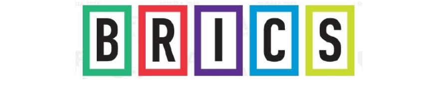

Специализированная сессия
В рамках Международной конференции "Управление рисками в прибрежной зоне в условиях меняющегося мира", состоится специализированная сессия и вторая встреча должностных лиц стран БРИКС по приоритетному направлению "Предупреждение и ликвидация природных катастроф".
Мероприятие проходит согласно Декларации о сотрудничестве по реализации многосторонних исследовательских проектов и Рабочему плану 2015-2018 стран БРИКС в области науки, технологий и инноваций, подписанному Министрами науки, технологий и инноваций стран БРИКС. Приоритетное направление "Предупреждение и ликвидация природных катастроф" стран БРИКС возглавляет Национальный Центр мониторинга и раннего предупреждения природных катастроф Бразилии (National Center for Monitoring and Early Warning of Natural Disasters – CEMADEN). Российский государственный гидрометеорологический университет является контактной точкой от России по приоритетному направлению.
Первая установочная встреча должностных лиц стран БРИКС по данному приоритетному направлению состоялась 29 октября 2015 г. в Нью-Дели, на площадке 6-ой ежегодной конференции Международного сообщества по комплексному управлению рисками катастроф (6th Annual Conference of the International Society for Integrated Disaster Risk Management, IDRiM).
Вторая встреча в формате Специализированной сессии БРИКС "Предупреждение и ликвидация рисков природных катастроф в прибрежных регионах", пройдет в рамках конференции "Управление рисками в прибрежной зоне в условиях меняющегося мира" 26 августа, 10.00-12.00.
На встрече предполагается рассмотреть текущее состояние по приоритетному направлению для каждой из стран БРИКС, с учетом географического расположения стран БРИКС и разнообразия вопросов по предупреждению и ликвидации природных катастроф, и возможности совместной деятельности и разработок совместных научно-технологических продуктов.
Бразильская сторона, как возглавляющая данное приоритетное направление, подготовило соответствующее письмо, согласованное в Министерстве иностранных дел Бразилии, и в настоящее время идет процесс согласования состава участников и программы сессии БРИКС.
"Предупреждение и ликвидация рисков природных катастроф в прибрежных регионах"
| Дата | Время | Мероприятие | Место |
| 25.08 | 09.00 - 12.00 | Участие в работе панельной дискуссии “Роль экологического образования в современном мире: проблемы, инновационные программы, результаты” – образовательная секция для молодых специалистов | РГГМУ, Рижский пр., 11 |
| 14.00 - 17.00 | Экскурсия по городу | ||
| 26.08 | 10.00 - 12.00 | Специализированная сессия в рамках конференции EMECS'11: «Предупреждение и ликвидация рисков природных катастроф в прибрежных регионах» | РГГМУ, Рижский пр., 11 |
| 12.00 - 13.00 | Встреча с ректором РГГМУ, В.Л. Михеевым | РГГМУ, Рижский пр., 11 | |
| 14.00 - 17.00 | Заключительное пленарное заседание конференции | РГГМУ, Рижский пр., 11 | |
| 19.00 - 23.00 | Банкет | Азимут-Отель | |
| 27.08 | 09.00 - 17.00 | Экскурсия на Комплекс защитных сооружений от наводнений Санкт-Петербурга и г. Кронштадт |